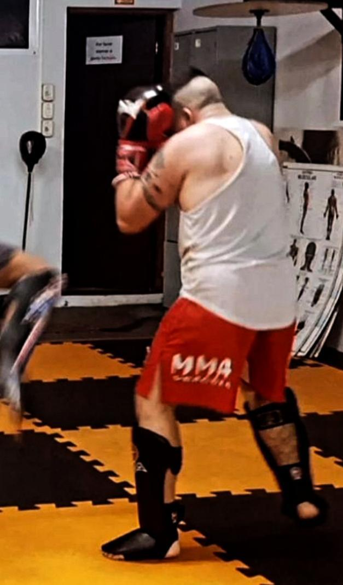
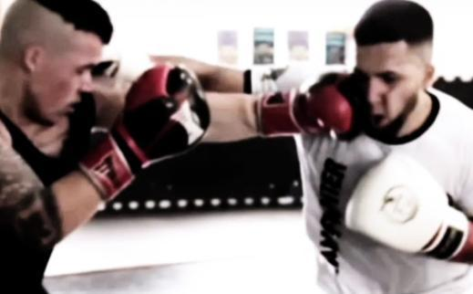
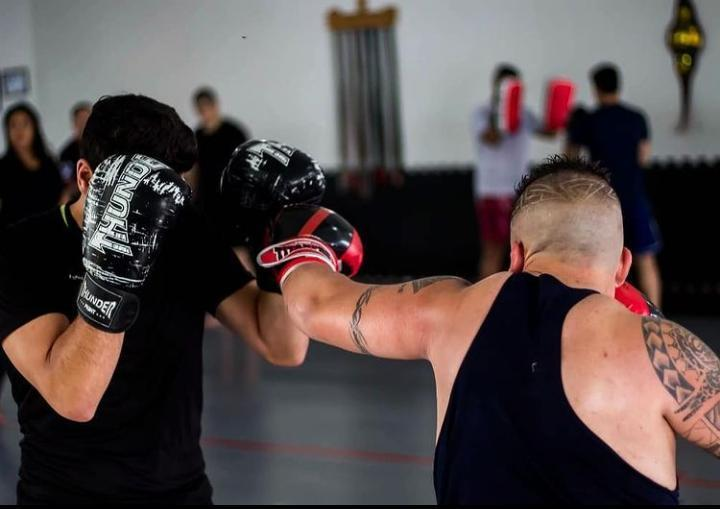
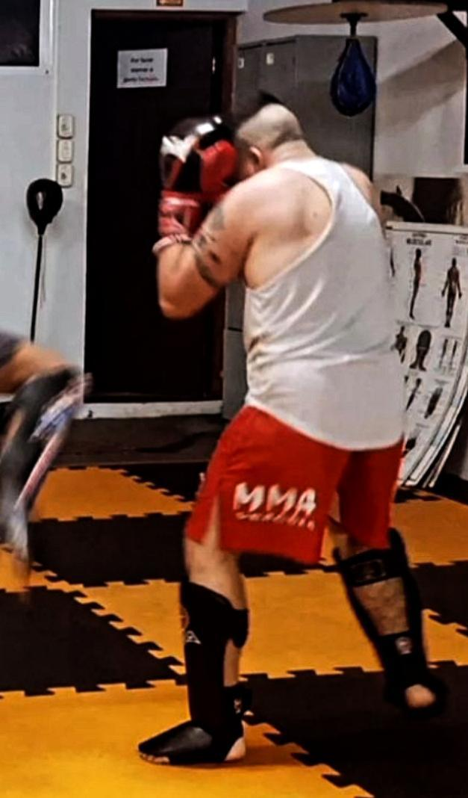
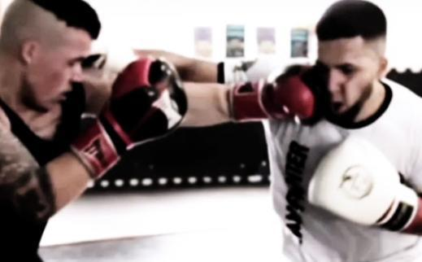
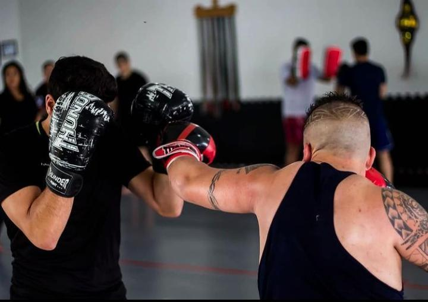

O que é o Muay Thai?
O Muay Thai, conhecido como a "arte das oito armas", é uma arte marcial tradicional tailandesa que utiliza punhos, cotovelos, joelhos, canelas e pés como armas de combate. Essa variedade de técnicas permite aos praticantes explorar diferentes estratégias de ataque e defesa, tornando-o uma forma de luta extremamente versátil. Além de sua eficácia comprovada em competições de ringue, o Muay Thai também é amplamente praticado como uma forma de exercício físico completo, contribuindo para o desenvolvimento da força, resistência, flexibilidade e coordenação motora. Além disso, serve como uma eficiente modalidade de autodefesa, capacitando os praticantes a lidar com situações de confronto de forma eficaz e segura.
História do Muay Thai
O Muay Thai tem suas origens nas técnicas de combate corpo a corpo desenvolvidas pelos guerreiros tailandeses há séculos. Ao longo dos anos, evoluiu para se tornar uma das formas mais refinadas e eficazes de luta em pé, com uma rica tradição cultural e histórica. Originário das antigas técnicas de guerra do povo tailandês, o Muay Thai era inicialmente praticado como um método de autodefesa e guerra, sendo integrado às habilidades de combate dos soldados para proteger seu território e povo. Com o tempo, essa arte marcial foi se desenvolvendo e se aprimorando, sendo transmitida de geração em geração, tanto dentro do contexto militar quanto entre os civis, até se tornar uma parte intrínseca da identidade tailandesa.
Benefícios do Muay Thai
O Muay Thai oferece uma série de benefícios físicos e mentais, incluindo melhoria da aptidão cardiovascular, aumento da força e flexibilidade, desenvolvimento de disciplina e foco mental, bem como um aumento na confiança e autoestima. Além disso, a prática regular do Muay Thai também promove a queima de calorias e o fortalecimento dos músculos, contribuindo para a perda de peso e a tonificação corporal. A intensidade dos treinos de Muay Thai também ajuda a liberar o estresse e a tensão acumulados, proporcionando uma sensação de bem-estar e relaxamento. Ao mesmo tempo, os aspectos competitivos e desafiadores do Muay Thai estimulam o desenvolvimento do espírito competitivo, da resiliência e da determinação.
Ética e Respeito
No Muay Thai, a ética e o respeito são fundamentais. Os praticantes são ensinados a valorizar a humildade, a cortesia e o respeito pelos oponentes e instrutores. O código de conduta inclui o respeito às regras do esporte e o tratamento adequado dos colegas de treino. Além disso, a disciplina e o respeito pelos mestres e pela tradição são aspectos essenciais da prática do Muay Thai, refletindo não apenas o compromisso com a arte marcial, mas também com a formação do caráter dos praticantes. Esses valores são transmitidos desde os primeiros passos na academia e são essenciais para manter a integridade e a harmonia dentro da comunidade de praticantes de Muay Thai.
 




